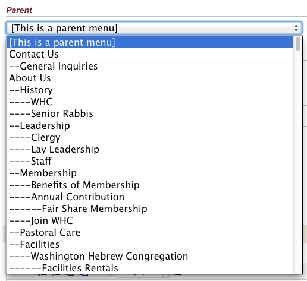
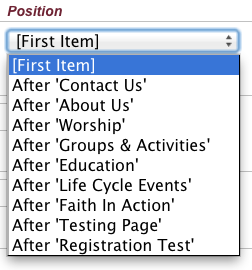
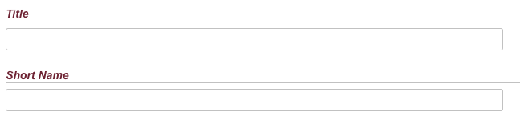
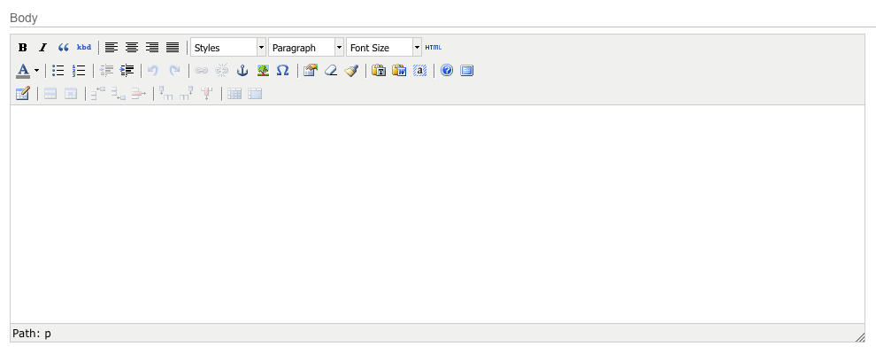

Template Pages¶
The Template Pages module is responsible for generating most of the content pages on your website. They provide a flexible way to create consistent page layouts with static content, custom fields, or content embedded from other modules.
Template Pages are generally managed hierarchically, mimicking the structure of the site architecture, and are capable of generating their own top-level navigation structure using Manifesto’s built-in Navigation hooks. Large websites, however, often employ the Menus module to provide fine-grained control over menu generation. Either way, it is beneficial to organize the hierarchy of your pages in such a way that you can easily find the content you need to manage.
Template pages basically come in two flavors:
- Static HTML pages (Title, Summary, Body, optional photos)
- Custom templates designed to include or embed content from other modules in addition to allowing static HTML text
Template definitions should only be created by trained and qualified developers who are comfortable creating and editing HTML files. For most websites, the development team creates a series of templates which cover the various layout needs for your website. New pages are then built using these predefined templates.
In the screenshot below, you see a listing of the top-level pages in the Template Pages module. The first column displays the page title, and the middle column displays the template used to display the page content.
Creating a new page¶
- On the listing page, you can either select the templlate you wish to use for your new page, or click “Browse the templates” if you aren’t sure. The browsing page gives you a brief description of each template so you can understand its function and layout. There may be a variety of different templates unique to your site, and each site is different, so be sure you are familiar with the particularities of your templates.

Once you know which template you are going to use, select it and you will be taken to the editing screen.
The first field on the editing screen is the current template in use. You may select a different template, but because another template may include different custom fields, the page will be refreshed to output a form appropriate for the new template.
Next, you are presented with two menus that allow you to locate your new page within the current hierarchy on the site. First, select a parent page from the menu. Any page can act as a parent for any other page – there is no limit on the nesting hierarchy – so all available pages are shown in this menu. If you wish to create a new top-level page, select “This is a parent menu.” Otherwise, select the page you wish to tp act as the parent of your new page.
The position menu is contextual, and changes based on the current selectiion of the parent menu. When you select a new parent page, the position page is updated to allow you to situate your new page among the other children of the parent. Between the parent and position menus, you can put your new page anywhere within the site hierarchy.
The title and shortname fields are pretty straightforward. The title property appears at the top of the page, and it usually used for the titlebar in the browser as well. The shortname is a URL-friendly representation of the same.
The URL path allows you to customize the path for the current page. If you leave this field blank, the default URL struture is
http://[your-site.example.com]/mod/template_pages/[parent-shortname]/[page-shortname]/index.php
You can create a custom URL for your content by entering it here. Leave out the default site URL, and enter only a relative path here.
The Display checkbox governs whether or not the page will appear on the front end of the site for the public. You can enable/disable display of this page on the site by toggling this checkbox.
Summary: The summary field is optional, and how it is used will depend on the configuration of your site. Depending on your site configuration, you may, for example, have a landing page that displays a thumbnail and summary for all of the pages available on your site. (If you are familiar with WordPress, the summary field acts much like `the_excerpt`).
The body field is where the bulk of the page content will probably be entered. For the most part, this field acts like “the HTML page content.” An entirely full-featured website can be constructed of nothing more than template pages with a title and a body. The WYSIWYG editor gives you full access to formatting, link creations, and the uploading of images.
All of the fields mentioned so far are consistent across all template pages. The real power of templates pages is in the ability to add custom fields that extend functionality, for example, allowing you to easily embed a form or calendar listing on your page.
The options available for custom fields is limitless, and could not possibly be covered in this document. But a few examples might help.
- You might, for example, have a series of pages about your numerous office locations. Each one of those pages will need to have a different office address, phone number, and perhaps a map image. While you could simply embed this information in the body field of your page, that means that the formatting (boldface, line breaks, consistency) is left entirely up to you to manage in the WYSIWYG editor. Since we are dealing with consistent, structured data, it would be nice if we could simply create custom fields to request and store this information.
- In this case, we could use a template with 3 custom fields for our office locations: address (a simple text area), phone number (text input), and a map image (custom image selector). This way we can store (and display) the data consistently, and it also allows us to have the option to make one or more of these fields required, so that we cannot submit the form without completing it. These benefits would not be available if we simply included the information in our body copy.
- Another common use of custom fields might be used by a custom template designed to display an embedded form created by the FormBuilder module. In this case, you would simply be presented with a drop-down menu that would allow you to select which form to embed on the page. The template itself – created by a developer – would contain all the markup and logic to handle processing the form submission.
The Editor Display page that you usually see after submitting an editing form in the Editor Console is not designed to display the content in the proper context of the front-end display, so it can be difficult to envisage the front-end layout. To give you a better indication of what your content will look like on the public site, there is a Preview button at the bottom of the form. Clicking this will attempt to display your current page within the context of front-end stylesheets and layouts without actually finalizing the saving of your data.
When you are satisfied with your content, click Submit and your page will be saved.
As with most content in Manifesto, you can select what page you want to see after submitting your content. By default, you will see the editor display page, but you can also choose to return to the listing page, or to immediately jump to adding another new template page.
Moving a page¶
There are two ways to alter the location of a template page on your site:
- From the listing page, you can click on the dotted bar on the left-hand edge of a row to drag that page and all of its descendants to a new position. Manifesto will reorganize all of your pages to accomodate the new position.
- From the editing form of a specific page, you can select a new parent and position value from their respective menus. After submitting the form, the current page and all of its descendents will be re-ordered to their new location.